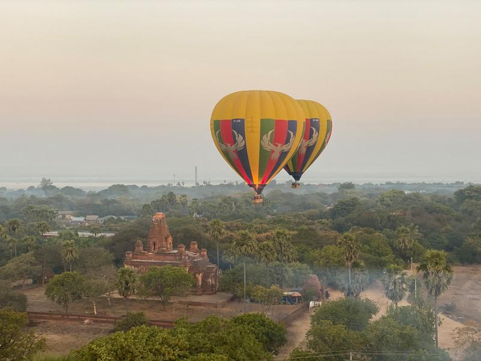
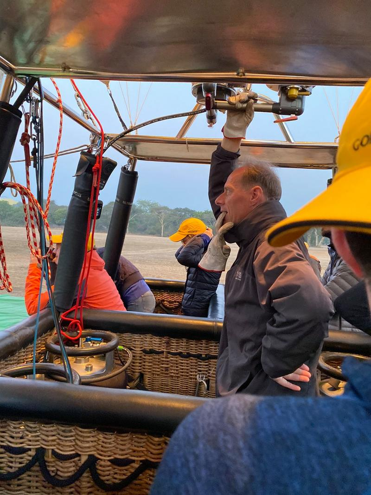
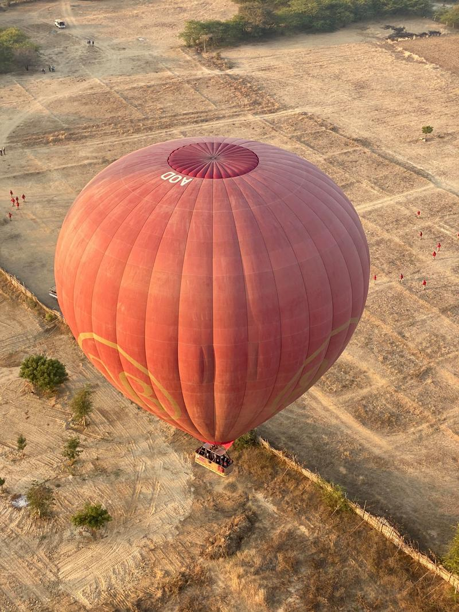

Jak se létá nad Myanmarem jaro 2020
Balónové létání nad Baganem.
2) Dobré ráno z Myanmaru.
1) Dobré ráno z Myanmaru.
4) Snídaně před vzletem.
10) Vzlétáme.
24) Nad Baganem.
30) Nad Baganem.
13) Z pohledu pasažérů.
11) Vzlétáme.
28) Nad Baganem.
20) Stoupáme do 700 metrů.
23) Nad Baganem.
31) Nad Baganem.
26) Nad Baganem.
27) Nad Baganem.
3) Dobré ráno z Myanmaru.
5) Příprava na vzlet.
6) Příprava na vzlet.
7) Příprava na vzlet.
8) Ahoj.
14) Nad pagodami.

9) Pilot.

15) Létání nad Baganem.
16) Létání nad Baganem.
17) Dobré ráno.
18) Stoupáme do 700 metrů.
19) Stoupáme do 700 metrů.
21) Pohled na pagody.
22) Nad Baganem.
25) Nad Baganem.
34) Certifikát.
33) Šampaňské na závěr.
12) Nad chrámy.
32) Přistáváme.

29) Nad Baganem.